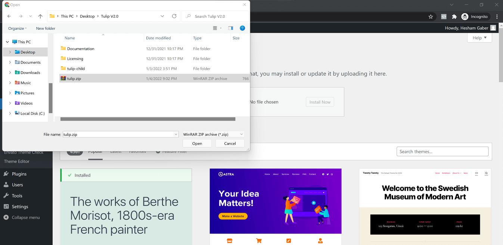
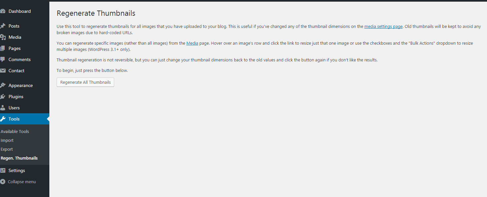
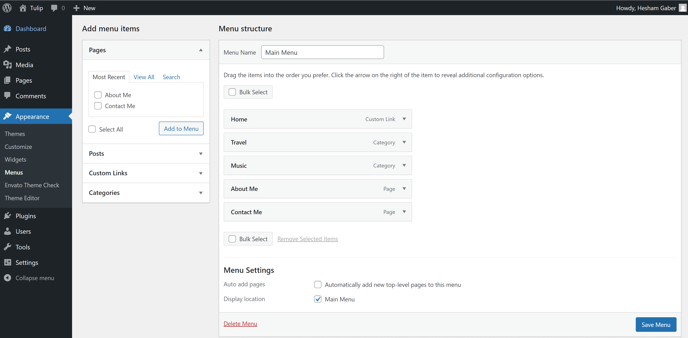
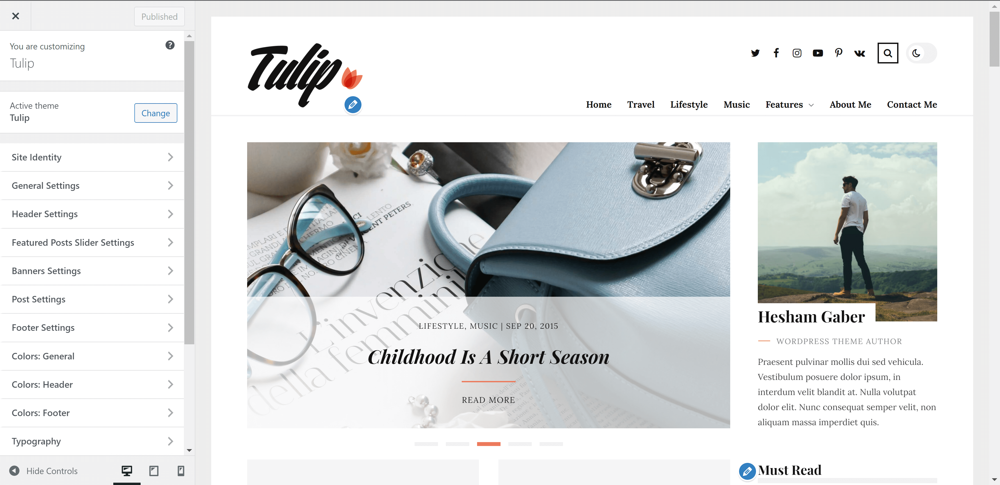
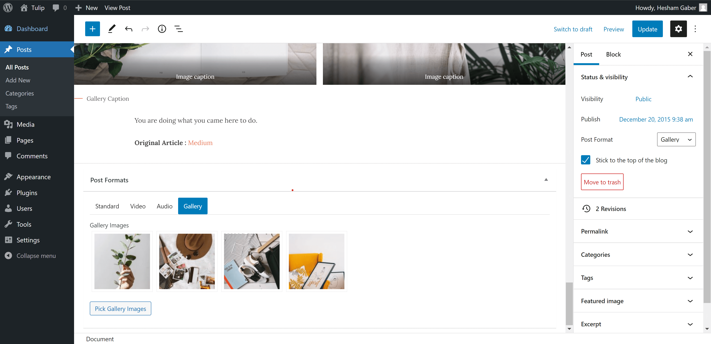
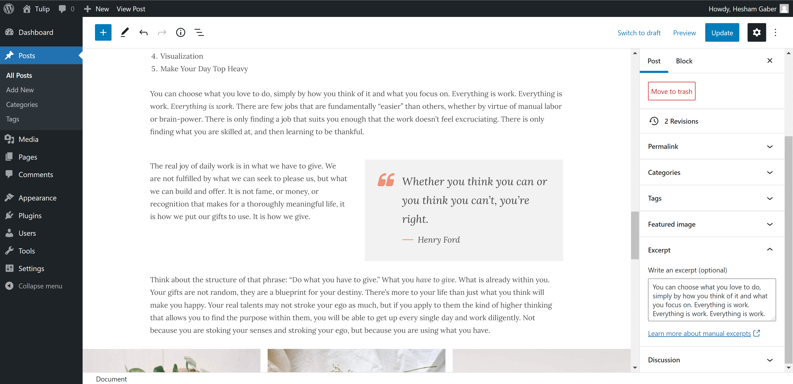
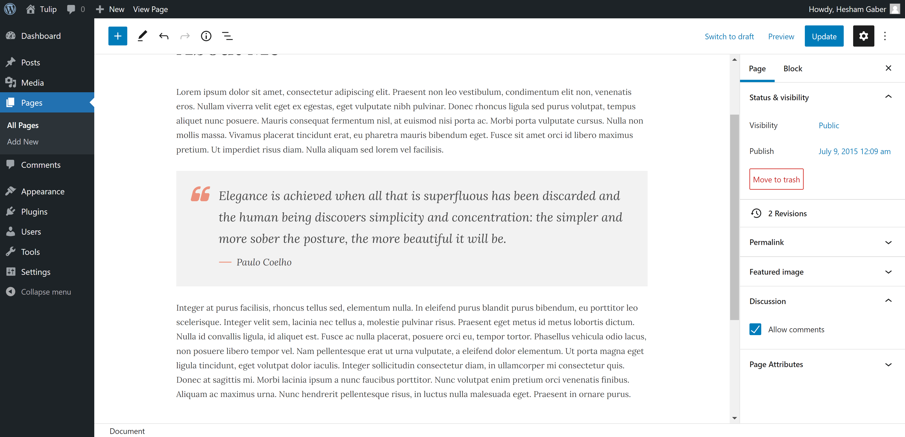

Thank you for purchasing our theme. If you have any questions that are beyond the scope of this help file, please Email us at support@flatlayers.com. We will get back to you within 12 hours and help you with any issue you might have. Thanks so much!
Installing Tulip Theme
Using WordPress Dashboard
Download full theme ZIP package and Extract it to normal folder.
Go to your WordPress dashboard and click on Appearance.
Click on Add New Themes then click on Upload.
Browse for tulip.zip inside the extracted folder then click Open.
Click the Install Now.
After finishing installation process click on Activate the theme.

Using FTP
Extract tulip.zip to normal folder.
Open WordPress instaltion directory.
Go to /wp-content/themes directory.
Upload tulip folder to that "themes" directory.
You will find tulip-child folder. It's a child theme you can edit and upload using FTP to themes directory.
Required Plugins
After installing Tulip theme. Theme shows message to install Tulip Theme Addons. Follow instructions to install and active them.
Tulip Theme Addons plugin contains:
Post formats meta boxes (Standard, Audio, Video, Gallery).
To install any plugin just go to Plugins > Add New. Type or paste plugin name and wait until it's appears then install and activate it. Please, read any plugin documentation before using it to know how to use it correctly.
Regenerate Thumbnails You must use this plugin if you uploaded pictures before installing Tulip theme. After installing and activating Regenerate Thumbnails.
Go to Tools > Regen. Thumbnails.
Click on Regenerate All Thumbnails and wait until it's finish.

Import Demo Content
Tulip theme comes with XML demo content file "tulip-demo-data.xml" you will find it inside theme package folder. To import it:
Go to Tools > Import.
Click on WordPress.
Install and activate WordPress Importer plugin.
Upload "tulip-demo-data.xml" and import it.
Updating Tulip Theme
Tulip theme may be updated periodically in order to add new features and fix bugs. You have two methods to update theme.
Updating Automatically
Envato have developed the Envato Market Plugin for WordPress.
This plugin automatically alert you on your dashboard when a new version of the theme is available and you can update it automatically from your WordPress dashboard. Follow upcoming steps to install and use it.
Click on Create New Menu button and give it a name.
Select Page, Posts, Categories or create custom links then click Add To Menu button.
Select Menu Location Main Menu.
Then Click on Save Menu button.
You can create more menus and use them in widgets.
To know how to create and control Menus check out WordPress Menu User Guide

2. Customization
Overview
Tulip theme powerful customiztion panel will help you to change options, colors, typography and see change in live preview before saving. Options are arranged to help you understand and use it.
Go to Appearance > Customize to customize your blog.
Here is some insturctions to use Customize panel:
Read each option title and description to know how to use it.
Test changes in live preview before saving it.
WooCommerce options display when WooCommerce plugin is activated.

Settings
List of all settings sections in customize panel
1. Site Identity:
Adding Site title
Adding Site tagline (description)
Adding Site icon (favicon)
2. General Settings:
Select sidebar position
Enable/Disable sticky sidebar
Show/Hide sidebar in posts
Show/Hide sidebar in pages
Select blog layout
Select categories archive layout
Select author archive layout
Select search results layout
Select tags & other archives layout
Select WooCommerce shop & archives page layout
Show/Hide sidebar in product page
3. Header Settings:
Set dark mode as default Mode
Enable/Disable dark mode
Adding logo
adding dark mode logo
Show/Hide social media icons
Show/Hide search
Show/Hide Woocommerce cart icon
Show/Hide Woocommerce account icon
4. Featured Posts Slider Settings:
Display specific posts and/or latest posts from certain categories.
Show/Hide Featured Posts Slider
Adding posts Ids
Adding categories slugs
Adding maximum number of posts (slides)
5. Banners Settings:
Banners appears under featured posts slider. You can add one banner or two banners. Minimum picture size is 1060x176px for one banner or 510x176px for two banners.
Show/Hide banners section
Adding banners backgrounds
Adding banners titles
Adding banners links
6. Post Settings:
Show/Hide Author Section
Show/Hide Previous & Next Posts Section
Show/Hide Related Posts
Show/Hide Share Icons
Show/Hide Author Meta
Show/Hide Date Meta
Show/Hide Tags Meta
Show/Hide Comments Meta
7. Footer Settings:
Show/Hide Footer Widgets
Show/Hide Footer Socials
Adding Copyrights Text
8. Social Media (Header & Footer):
Add your social media links and it will display automatically in header and footer like demo.
Please add full link starting with (https://) not just username.
Colors
Colors customize sections allow you change all theme colors in Light mode.
Dark Mode has only one color scheme.
Accent color display in both light and dark mode.
1. Colors: General
Allow you to change general colors, backgrounds, headings, buttons...etc
2. Colors: Header
Allow you to change Header colors, backgrounds, menu, submenu...etc
2. Colors: Footer
Allow you to change Footer colors, backgrounds...etc
Typography
Tulip theme is designed based on a powerful typography ratio.
Tulip theme has 4 post Formats ( Standard, Video, Audio, Gallery ).
Standard It will display Featured Image if you added it.
Video To embed Youtube, vimeo, Dailymotion or TED video.
Just copy video link from browser and paste it like this:
"https://vimeo.com/34038042"
"https://www.youtube.com/watch?v=NgJHbvGd_q0"
"http://www.dailymotion.com/video/x4o6cky_funny-cats-compilation-funny-cats-a-funny-cat-videos-compilation-2016-new-hd_animals"
"http://www.ted.com/talks/jia_jiang_what_i_learned_from_100_days_of_rejection"
Audio To embed SoundCloud or spotify audio.
Just copy audio link from browser and paste it like this:
"https://soundcloud.com/goodlifeproject/mark-nepo-1"
"http://open.spotify.com/track/5yEPxDjbbzUzyauGtnmVEC"
Gallery To insert slideshow gallery to post.

Featured Image
Add featured image for all posts even gallery posts to display it in blog and archives pages.
Featured image size must be ( 1060px width X 600px height ) or more.
Post Excerpt
Excerpt is generated automatically with first 60 words.
You can add excerpt manually. please see the image below.

Pages
As in posts section you can create page using gutenberg or classic editor.
Also you can add featured image.
Disable Comments
Default pages have comments section.
To hide comments section from page :
Scroll to Discussion section and remove Allow comments selection.

WooCommerce
To use WooCommerce plugin in Tulip theme.
Install it and follow setup instructions
Plugin will setup required pages (Shop, Cart, Checkout and Account ).
Please, read WooCommerce Documentation. It will help you to know all tips required to create your shop.
Go to Appearance > Widgets to add widgets to WooCommerce Sidebar
4. Sidebars
Sidebars & Widgets
Tulip theme has 5 widget areas:
Sidebar
Footer Widget 1.
Footer Widget 2.
Footer Widget 3.
WooCommerce Sidebar.
It will added automatically after activating WooCommerce plugin and it display in WooCommerce archives and product pages. We prefer to added WooCommerce widgets to it.
To add Widgets go to Appearance > Widgets.
Tulip Custom Widgets
Tulip theme has 5 Custom widget. they are prefixed by theme name "Tulip".
Tulip About.
To add information and picture for blog owner.
Go to extracted theme package folder > tulip > languages.
Open tulip.pot file using Poedit program and click on Create new translation button.
Select translation language.
Find words you want to translate and add translation.
Save .po file in same folder and compile file to .mo and save in same folder.
If French (France) it will be like that fr_FR.po fr_FR.mo
Check this link to name your file correctly depending on WordPress language: https://make.wordpress.org/polyglots/teams/ You will find correct name next to each language in WP Locale column.
Uplaod .po and .mo files to wp-content/themes/tulip/languages/ directory using FTP.